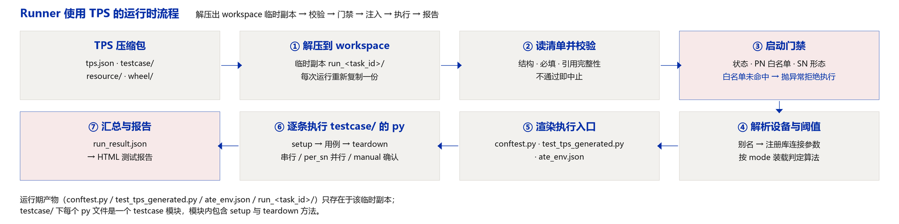
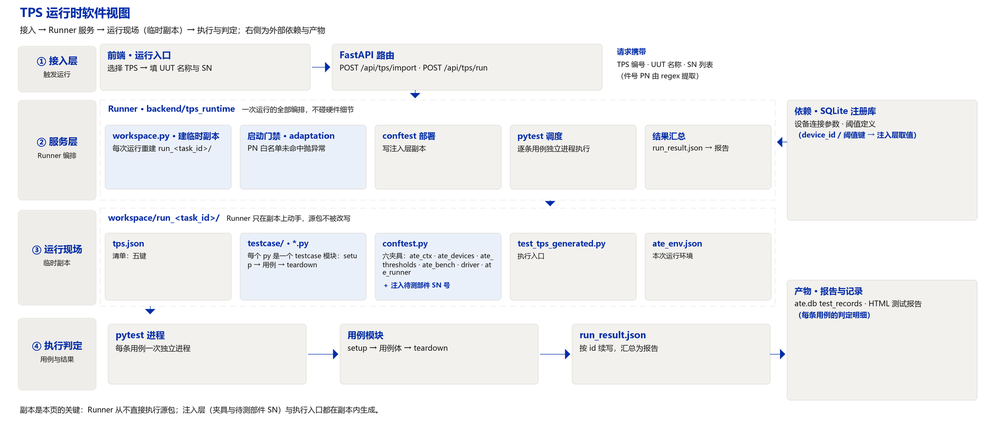
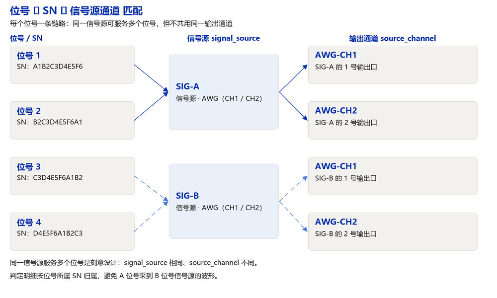

01 · 设计意图
把测试用例集从执行代码中剥离为受控数据
本方案要解决三个问题：测试内容散落在代码里、无法评审；同一台装备在不同台架上的判定口径不一致； 更换台架必须改动用例实现。据此确定四条设计约束。
| 约束 | 含义 |
|---|---|
| 清单只声明，不实现 | 清单内不出现执行代码、连接参数、调用实参；测试动作全部由 testcase/ 中的 Python 函数实现 |
| 单一事实源 | 用例顺序只写在 cmd_suit，判定算法与阈值只写在 threshold，设备引用只写在 device，被测对象适配范围只写在 adaptation |
| 引用而非复制 | 清单只写设备别名与注册库编号，IP、端口、串口、波特率由执行器在运行时从注册库查询 |
| 判定集中 | 通过/不通过只由用例调用判定接口产生，清单不承载判定表达式 |
清单的边界：不描述夹具接线细节，不承载测试向量数据——这类内容以配置文件形式放在包内
resource/，由用例按包内路径读取。
02 · TPS 包结构
一个 TPS = 一个目录（打包即压缩包）：清单 + 用例实现 + 配置文件 + 驱动包
spm_rh_dyn/ ← TPS 包（打包后即压缩包）
├─ tps.json ← 清单：五键
├─ testcase/ ← 每个 py 文件是一个 testcase 模块
│ ├─ __init__.py 必备
│ ├─ env_setup.py 含 setup / teardown 方法
│ ├─ power.py 含 setup / teardown 方法
│ └─ comm.py
├─ resource/ 其他配置文件
│ ├─ pn_whitelist.json
│ ├─ channel_map.json
│ └─ fixture_list.json
└─ wheel/ 其余 Python 驱动
├─ scope_sdk-1.2.0-py3-none-any.whl
└─ dmm_driver-0.9.3-py3-none-any.whl
| 子目录 / 文件 | 结构 | 作用 |
|---|---|---|
| tps.json | 单个 JSON 文件，五键 | 清单：声明跑什么、按什么顺序、按什么判 |
| testcase/ | Python 包，必须含 __init__.py，一个 py 文件一个 testcase 模块，模块内含 setup 与 teardown 方法 | 用例实现：清单条目 case 字段引用的目标函数 |
| resource/ | 配置文件目录，JSON / CSV / YAML 均可 | 存放清单之外的配置与数据：大批量 PN 白名单、通道表、夹具清单、测试向量 |
| wheel/ | .whl 文件 | 存放其余 Python 驱动与设备 SDK，随包分发，供离线工控机安装或直接加载 |
| 运行期产物 | 不在包内 | conftest.py、test_tps_generated.py、ate_env.json、run_<task_id>/ 由执行器在运行目录生成 |
导入接口接收单个 JSON 清单文本，后端将其落成 testresource/<id>/tps.json；
testcase/、resource/、wheel/ 三个目录随后整体拷入同一 TPS 目录。
2.1 运行时副本
Runner 不在源包上直接执行。每次运行它都在 workspace 下建一个临时副本，把 TPS 内容整体复制进去， 之后的校验、注入与执行都发生在副本里。
| 环节 | 行为 |
|---|---|
| 建副本 | <workspace>/<tps 目录名>/run_<task_id>/；同名目录先清掉再整体复制源目录 |
| 执行对象 | 副本，不是源包——源包改动后下一次运行立即生效，多次运行之间互不污染 |
| 副本内产物 | conftest.py（公共注入层副本）、test_tps_generated.py（执行入口）、ate_env.json（本次运行环境） |
| 清理 | 按 keep_runs 保留最近若干次运行，其余自动清理 |

03 · 使用方法：Runner 与 conftest
清单不可执行——Runner 负责读取、校验与编排，conftest 负责向用例注入所需的一切

Runner（后端执行器）
| # | 动作 | 依赖字段 |
|---|---|---|
| 0 | 在 workspace 下建临时副本 run_<task_id>/，把 TPS 内容整体复制进去 | — |
| 1 | 在副本内载入 tps.json，校验结构：schema、必填项、引用完整性 | 全量 |
| 2 | 启动门禁：状态是否允许生产、件号是否在白名单、SN 形态是否匹配 | metadata.status / adaptation |
| 3 | 解析设备与阈值：别名 → 注册库 → 连接参数；阈值键 → 算法与参数 | device / threshold |
| 4 | 按三段顺序展开执行序列，渲染执行入口与环境描述 | cmd_suit / setup / teardown |
| 5 | 逐条用例以独立 pytest 进程执行，收集判定明细 | 条目 exec / parallel / manual |
| 6 | 汇总 run_result.json，生成 HTML 报告 | metadata / threshold |
conftest（注入通道）
| 夹具 | 注入内容 |
|---|---|
| ate_ctx | 判定上下文：expect(key, value, label)、状态回传、人工确认 |
| ate_devices | 别名 → 设备实例，连接参数已就绪 |
| ate_thresholds | 阈值键 → 判定算法与参数 |
| ate_bench | 台架信息：编号、类型、BOM 摘要 |
| driver | 设备驱动工厂：示波器、电源、DMM 按型号构造 |
| ate_runner | 当前用例在序列中的位置与状态 |
def test_vdd(ate_ctx, ate_devices):
dmm = ate_devices["dmm"]
ate_ctx.expect("TC_VDD", dmm.read_voltage()) # 判定口径来自 threshold
用例不读清单文件、不连设备、不判断阈值。
04 · 执行流程
五个键按固定顺序被消费，形成从启动到报告的一条流程
ate_devices 夹具mode 装载判定算法与参数，形成 ate_thresholds 夹具per_sn 按位号展开、manual 插入等待点run_result.json05 · metadata · 版本数据
这份基线是什么版本、谁定的、什么时候定的；是评审与追溯的落点，不参与执行
| 字段 | 必需 | 作用 |
|---|---|---|
| version | 是 | 基线版本号，报告据此追溯判据版本 |
| status | 是 | draft / review / released；只有 released 允许用于正式生产运行 |
| author | 是 | 责任人，判据谁定的 |
| created_at | 是 | 基线建立日期（YYYY-MM-DD） |
| id | 是 | 基线编号：运行、报告、记录引用它的稳定键 |
| name | 是 | 基线名称：报告标题与列表展示用 |
| applies_to | 是 | 适用台架类型编号 |
06 · adaptation · PN 白名单与多路 SN 信号源匹配
这台 UUT 能不能用这份基线测；多路 SN 并行时，每个 SN 采到的数据属于哪个信号源
6.1 PN 白名单机制
件号从 UUT 名称中按正则提取，再与白名单逐项比对；不在白名单内直接抛异常，拒绝执行。白名单是 "这份基线适配哪些件号"的唯一声明处。
UUT 名称 / 登记信息
│ part_number.regex 提取件号
▼
件号 PN ──── 与 part_number.whitelist 比对 ────┬── 命中 ──→ 通过，继续执行
└── 未命中 → 抛异常，拒绝执行
| 字段 | 作用 |
|---|---|
| part_number.regex | 从 UUT 名称中提取件号的正则（命名组 pn） |
| part_number.whitelist | 件号白名单；命中才允许执行，未命中直接抛异常 |
| part_number.whitelist_file | 可选：白名单文件相对路径（如 resource/pn_whitelist.json），用于件号数量大、需独立维护的场景；与内联白名单合并生效 |
6.2 多路 SN 匹配信号源
channels 声明并行路数与"位号 → 信号源"的对应关系。几个 SN 同时测试时，每个位号的采集通道各接在一个信号源上；
这层关系不显式声明，就会出现 数据串位——A 位号采到 B 位号信号源的波形，报告把 A 判成合格或不合格。
| 字段 | 作用 |
|---|---|
| count | 并行路数 |
| slots[].slot | 位号（1..count），对应台架上第几个 SN 位 |
| slots[].signal_source | 该位号 SN 采集数据所对应的信号源标识；判定与记录据此把数据归到正确的 SN |
| slots[].source_channel | 信号源上的物理输出通道，保证位号之间不落到同一个输出口 |
| slots[].fixture | 可选：该位号使用的夹具编号 |

同一信号源被多个位号共用是刻意设计：signal_source 相同、source_channel 不同，一眼可辨。
6.3 SN 形态
| 字段 | 作用 |
|---|---|
| sn.regex | SN 形态正则（12 位英数），形态不符即抛异常，拒绝执行 |
| sn.note | 可选：形态说明，供人阅读 |
07 · device · 设备信息
用例里的设备名，对应台架上真实的哪台设备；只写引用，不写连接参数
| 字段 | 必需 | 作用 |
|---|---|---|
| 别名（键） | 是 | scope / dmm / psu / spin 等，用例按别名取设备 |
| device_id | 是 | 注册库（SQLite device_registry）中的设备编号，解析时精确命中 |
| category | 是 | 设备类别：确认该类别确实在本台架 BOM 内 |
不写入清单的内容：IP、端口、串口、波特率等连接参数。这些由注入层在运行时从注册库查询—— 换台架时连接参数必变，写进受控文件就是维护灾难。解析失败只记录告警，不阻断整套流程的启动。
08 · threshold · 阈值与判定算法
阈值只声明按什么算法判、参数是多少；判定逻辑由用例调用判定接口触发
minmax · 上下限
min ≤ 实测值 ≤ max
std · 统计偏差
|均值 − x̄| ≤ n·σ
mean · 均值偏差
|标称 − x̄| ≤ delta
range · 极差
max(x) − min(x) ≤ max_range
delta · 差值
|a − b| ≤ max_delta
count · 计数
异常样本数 ≤ max_count
每个阈值键的公共字段：
| 字段 | 必需 | 作用 |
|---|---|---|
| mode | 是 | 判定算法（上表之一） |
| 算法参数 | 是 | 按 mode 取值，见上表 |
| label | 否 | 阈值名称，用于报告与判定明细 |
| unit | 否 | 单位（V / mA / rpm），用于展示与判定消息文案 |
8.1 多算法兼容建议：统一结果结构
判定算法会不断增加，但报告列、数据库列、明细渲染不应随之改动。建议所有算法产出同一种结果结构，
由用例判定接口填充；新增算法只扩展 mode 与算法参数，结果结构与消费方不动。
result{
"key": "TC_VDD", // 阈值键
"mode": "minmax", // 判定算法
"samples": [3.301, 3.298], // 参与判定的样本（std / range / count 用）
"value": 3.301, // 判定代表值：minmax 取实测值，std / mean / range 取统计值
"min": 3.135, "max": 3.465, // 生效的判定边界（按 mode 换算后）
"unit": "V", "ok": true,
"message": "3.301 V 位于 [3.135, 3.465]" // 供报告直接展示
}
09 · cmd_suit · 用例清单与编排
跑哪些用例、什么顺序、失败怎么办；三层：环境初始化 / 测试套 / 环境终止
| 段 | 作用 | 执行方式 |
|---|---|---|
| setup | 环境初始化：上电、复位、装夹 | 串行，数组顺序即执行顺序 |
| cmd_suit | 测试套：全部测试用例 | 默认串行；parallel=per_sn 时每位号各跑一遍 |
| teardown | 环境终止：断电、卸载、归档 | 串行；always_run=true 的条目失败也必须执行 |
9.1 串行与并行
| 方式 | 含义 |
|---|---|
| 串行（默认） | 条目按数组顺序依次执行，上一条结束才开始下一条 |
per_sn | 该条目在每个位号上各执行一次，数据按 adaptation.channels 的绑定归属到对应 SN |
shared | 所有位号共用一次执行（如整机总上电、总功耗） |
9.2 人工确认子用例
需要操作员判断的步骤（外观检查、装夹确认、人工上下料）以人工确认子用例表达：运行时弹出确认窗口，
操作员确认后继续；超时按 timeout_s 处置。自动用例中途需要确认时，也可在用例内调用判定上下文的确认接口插入等待点。
{
"id": "M-01",
"case": "testcase.manual::appearance_check",
"manual": {
"message": "确认外壳无划伤、屏面无亮点后继续",
"expect": "操作员确认", // 展示给操作员的确认口径
"timeout_s": 300 // 超时处置：按失败记录或重试
}
}
9.3 用例条目字段
| 字段 | 必需 | 作用 |
|---|---|---|
| id | 是 | 条目标识：报告主键、执行入口的用例 id、运行结果的续写键 |
| case | 是 | module::function 用例引用，清单与代码 1:1 映射的唯一锚点 |
| exec | 否 | timeout_s；retry{max, interval_s, on}；on_fail 失败处置 |
| parallel | 否 | serial（默认）/ per_sn / shared |
| manual | 否 | message / expect / timeout_s，人工确认子用例 |
| skip_when | 否 | 条件跳过（如设备缺失），条件成立则跳过而非失败 |
| always_run | 否 | 仅 teardown：为 true 时失败也必须执行（安全收尾） |
不进入条目的字段（设计边界）：
| 字段 | 为何不进清单 | 它的去处 |
|---|---|---|
| params | 调用实参不是基线数据 | 用例以自身默认值为准，调用形如 fn(ctx) |
| resources | 资源信息不属于基线 | 位号与信号源的关系由 adaptation.channels 表达 |
| name / description / no / tags | 属用例自身属性 | 用例名与描述取自代码 |
| checks / optional / depends_on | 属判定逻辑与运行策略 | 判定由用例完成；跳过与失败策略走 skip_when / exec.on_fail |
10 · 完整骨架
五键 + 三段，可直接作为新建 TPS 的起手模板
{
"schema": "tps.v2",
"metadata": { "version": "1.3.0", "status": "released", "author": "测试工艺",
"created_at": "2026-10-07", "id": "SPM-RH-DYN",
"name": "SPM 高温动态测试", "applies_to": "SPM-RH-DYN-01" },
"adaptation": {
"part_number": { "regex": "(?P<pn>[A-Z0-9]{10})",
"whitelist": ["SPM1234567", "SPM1234568"],
"whitelist_file": "resource/pn_whitelist.json" },
"sn": { "regex": "[A-Z0-9]{12}", "note": "12 位英数" },
"channels": { "count": 2, "slots": [
{ "slot": 1, "signal_source": "SIG-A", "source_channel": "AWG-CH1", "fixture": "FX-01" },
{ "slot": 2, "signal_source": "SIG-B", "source_channel": "AWG-CH1", "fixture": "FX-02" } ] }
},
"device": {
"psu": { "device_id": "DEV-PSU-01", "category": "power_supply" },
"scope": { "device_id": "DEV-SCOPE-03", "category": "oscilloscope" },
"dmm": { "device_id": "DEV-DMM-02", "category": "multimeter" }
},
"threshold": {
"TC_VDD": { "mode": "minmax", "min": 3.135, "max": 3.465, "label": "供电电压", "unit": "V" },
"TC_IDD": { "mode": "std", "n": 3, "min_samples": 8, "label": "静态电流", "unit": "mA" },
"TC_RPM": { "mode": "mean", "delta": 50, "label": "转速", "unit": "rpm" },
"TC_RIP": { "mode": "range", "max_range": 20, "label": "纹波极差", "unit": "mV" },
"TC_BAL": { "mode": "delta", "against": "TC_VDD_A", "max_delta": 0.05, "label": "双通道压差", "unit": "V" },
"TC_LOSS": { "mode": "count", "max_count": 0, "fail_when": "value > 0", "label": "丢包次数", "unit": "次" }
},
"setup": [
{ "id": "S-01", "case": "testcase.env_setup::power_on",
"exec": { "timeout_s": 60, "retry": { "max": 2, "interval_s": 5, "on": "timeout" },
"on_fail": "abort" } }
],
"cmd_suit": [
{ "id": "T-01", "case": "testcase.power::test_vdd", "parallel": "per_sn" },
{ "id": "T-02", "case": "testcase.comm::test_link", "parallel": "shared",
"skip_when": "device_missing:dmm" },
{ "id": "M-01", "case": "testcase.manual::appearance_check",
"manual": { "message": "确认外壳无划伤后继续", "expect": "操作员确认", "timeout_s": 300 } }
],
"teardown": [
{ "id": "E-01", "case": "testcase.env_setup::power_off", "always_run": true }
]
}
11 · 设计要点
变化的影响面被限制在单键内
| 关注点 | 结论 |
|---|---|
| 五键边界 | metadata 只管版本、adaptation 只管能不能测与数据归属、device 只管设备引用、threshold 只管判定算法、cmd_suit 只管编排 |
| 换台架 | 只改 device 引用或注册库记录，清单结构不动 |
| 改判据 | 只改 threshold，用例实现不动 |
| 加用例 | 只加 testcase/ 模块与 cmd_suit 条目 |
| 责任分区 | 需评审的内容集中在清单，需维护的代码集中在 testcase/，随包分发的依赖集中在 wheel/，配置与数据集中在 resource/ |